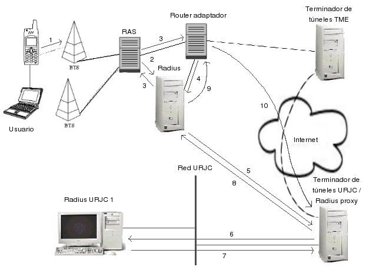

Siguiente: memoria
Subir: Funcionamiento general
Anterior: Funcionamiento general
Índice General
startsectionparagraph4@-3.25ex plus
-1ex minus -.2ex1.5ex plus .2exAcceso mediante GSM
Una vez disponible la infraestructura necesaria por parte de Telefónica y la
Universidad Rey Juan Carlos para ofrecer el servicio, los usuarios tan sólo
necesitan disponer de un PC conectado a un teléfono móvil GSM configurado con
el software provisto por TME para realizar llamadas de datos.
- En primer lugar el usuario marcará el número corto 553 (o el número largo
+34 629 000 553), obteniendo así acceso al servicio de conexión a Internet de
Telefónica.
- Los RAS3.5 de acceso GSM de Telefónica
consultarán su Radius corporativo para crear un túnel.
- El servidor Radius corporativo de Telefónica examinará el nombre de usuario
que se desea autenticar y su realm asociado. Si éste coincide con el
indicado por la universidad, @urjc, el servidor indicará al RAS un
router adaptador de túneles concreto contra el que crear el túnel.
- Una vez creado dicho túnel, será el propio router adaptador el que envíe
una petición Radius al servidor de Telefónica para autenticar al usuario.
- Nuevamente el Radius corporativo de TME comprobará el realm o
mnemónico del usuario. En caso de pertenecer a la URJC escala la
petición de autenticación al Radius instalado en el terminador de túneles de la
universidad, a través de una infraestructura de túneles que finaliza en éste.
- El Radius delegado de la universidad comprueba el realm del usuario que
pide ser autenticado. Al ser reconocido, escala a su vez la petición a uno de
los servidores Radius de la red de la universidad.
- Los Radius internos de la universidad autentican al usuario contra el
directorio activo LDAP3.6e informan de su decisión al Radius delegado.
- El Radius delegado de la universidad responde adecuadamente al servidor
Radius de TME que le hizo la petición.
- El servidor Radius de TME dará al usuario por autenticado e informará al
router adaptador y a un servicio de DHCP3.7, que asignará al usuario una
dirección IP del pool GSM determinado por la universidad.
- A partir de este momento, todo el tráfico generado por el usuario es
encaminado hacia la red de la universidad por los túneles correspondientes
a la misma (cada corporación goza de túneles independientes), llegando así
hasta el terminador de túneles IPSec de la misma.
Figura 3.3:
Secuencia de acceso para
terminales GSM.
|

|
Siguiente: memoria
Subir: Funcionamiento general
Anterior: Funcionamiento general
Índice General
Jaime Perez Crespo
2005-02-09